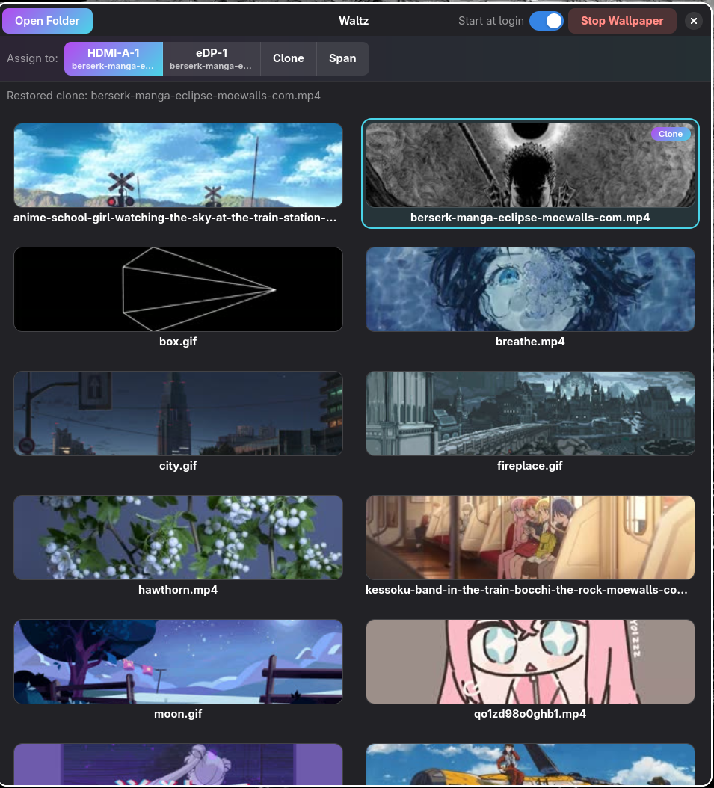

for wlr-layer-shell compositors — niri · hyprland · sway
Waltz turns a folder of your own clips and gifs into a wallpaper picker — browse real thumbnails, click one, and it's live on your monitor. No exec-once lines, no hand-rolled mpv flags to remember.

the actual app, mid-clone, running waltzer-white on a two-monitor niri session
the loop
This is the whole interaction. Everything else in Waltz exists to keep this fast.
Any mix of .mp4, .mkv, .webm, .gif. ffmpeg pulls one still frame per file for the grid — nothing gets preview-played live, that's expensive for no reason.
Cached to disk by content fingerprint, so reopening a folder you've already browsed costs nothing.
Waltz's backend takes over immediately. Whatever was already running on that output gets killed first — SIGKILL, not a polite ask.
multi-monitor
Each mode is a genuinely different mechanism underneath, not just a UI toggle on the same behavior.
one waltzer-white process per output
Every monitor gets its own independent file and its own process. Setting one never touches another.
one process, one decode, every output
waltzer-white shares a single decode across every monitor's own surface — Clone costs about the same memory for two monitors as for one, not double.
scale + crop + setdar, per output
The mechanism still exists — it needs mpv option passthrough, which waltzer-white deliberately doesn't have. Coming back once it does.
philosophy
Wayland's wlr-layer-shell protocol — the thing that lets a client draw a background layer under every window — isn't universal. GNOME's Mutter and KDE's KWin don't implement it at all. Waltz detects the session and picks a real backend instead of assuming one approach works everywhere, and tells you plainly when there isn't one yet.
The interesting part turned out to be Clone mode: rather than one renderer process per monitor, waltzer-white shares a single libmpv decode across every output it's given, switching eglMakeCurrent between each one's own surface per frame. Two monitors cost about the same memory as one. On hardware where hwdec falls back to software decode, forcing single-threaded decode (vd-lavc-threads=1) cut memory a further ~28% — multi-threaded software decode allocates per-thread frame buffers that a background loop never needed.
where it stands
/proc and killed before a new one claims it.gsettings, but needs the user to already have it installed.plasmashell restart — not worth driving directly yet.install.sh installs these via your package manager automatically — listed here so you know what's going on your system:
ffmpeg — thumbnail extractionpython-gobject, gtk4, libadwaita — the GUIlibayatana-appindicator — the tray iconrust — builds waltzer-white; not needed after that# download, extract, install $ tar xzf waltz-*.tar.gz && cd waltz-*/ $ ./scripts/install.sh # config and thumbnail cache live under ~/.config/waltz/config.json ~/.cache/waltz/thumbnails/